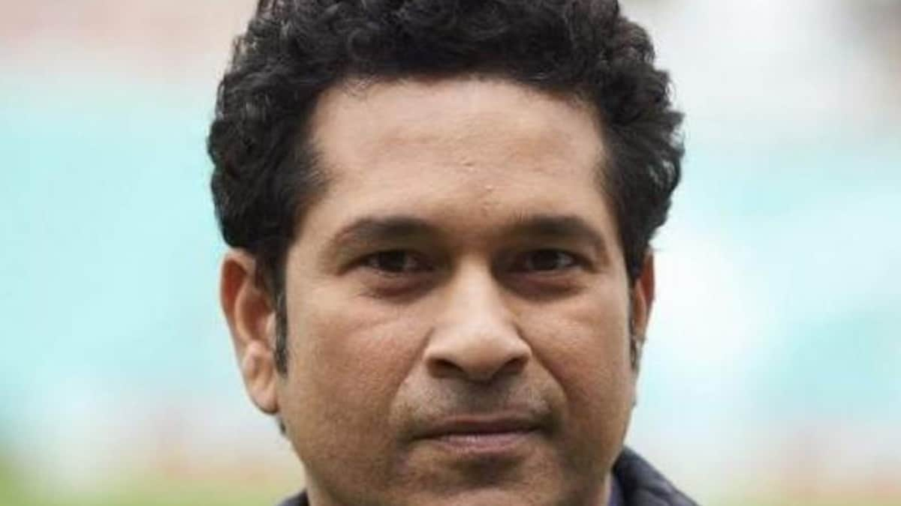
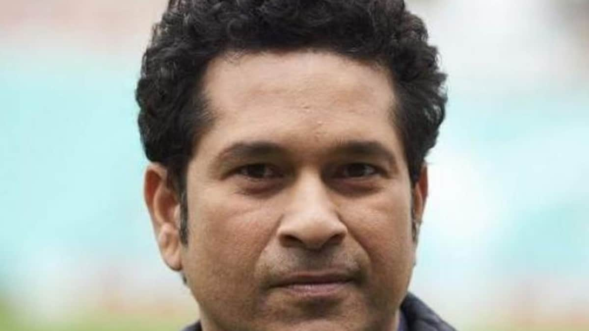

My Favourite Books

Cricket is my favorite hobby and a famous sport too. It makes me feel healthy, fit and a stronger person. It makes me feel confident and proud of what I am. I started playing cricket when I was a kid of 8 years old. My cricket passion started when I was a small kid and I started playing this game with my elder brother in the back side of my home. At that time also I was a good player in comparison to the children of my age. May be because I love to play cricket and I play it too seriously focusing on each and every ball. Like many other people in India I was also aspired to play for my country. My days were never complete without cricket I used to play with my friends after my school hours were over. I use my left hand to hold the bat & bowl the ball which many people found strange but I was comfortable playing. Later with time I learnt to play cricket well and started participating in my school teams. I was appreciated by the match viewers as I used to be the highest score holder of the match. I was identified as the best bowler of the Lawrence School (my school) at the age of 14 which was a great achievement for me and my parents in the year 2000. My favorite cricket player is SachinTendulkar. During my farewell I was also honored with a certificate to appraise my contribution to my school cricket team. My cricket skills helped me to flatter Susain (my first girlfriend) when I was 20 years old. Later when I was 22 years old I became a part of Vishvya Bhartiya Vidya Sansthan & represented my teams in several tournaments. But unfortunately we didn’t achieved much. I was disheartened and then Susain too left me because she dint find me her hero anymore. She thought I am a big looser. Later I took training from Sir Josheph. He taught me so many minute things and trained me to play perfectly. Today I am a member of Nitya Nanayang Polytechnic team. I am proud to be a part of this team. Our team is gradually growing day by day. We are playing many cricket matches at national level. My aim is to play internationally.
 
